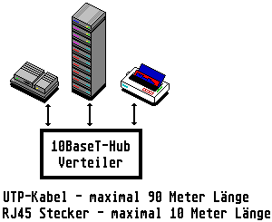

Previous
Next
TOC
IEEE 802.3 (10BaseT)
IEEE 802.3 lOBaseT ist die Ethernet-Implementierung mit einer aktiven
Sterntopologie über verdrilltes Litzenleiterkabel mit der Impedanz
von 100 Ohm.
UTP - (Unshielded Twisted Pair)
Durch die Verdrillung einzelner Adernpaare untereinander wurde eine
optimale Übertragung im Hochfrequenzbereich (im Einzelfall bis 100
MHz), beziehungsweise eine minimale Über- und Nebensprechdämpfung
erreicht. Die Gesamtkabellänge zwischen den Leitungskonzentratoren
und der DTE darf maximal 100 Meter betragen. Eingesetzt werden bei
der 10BaseT Verkabelung die Steckverbinder vom Typ RJ45.

lOBaseT besitzt topologisch eine Sternstruktur und keine Busstruktur
wie bei lOBaseS und lOBase2. Der Vorteil der Sterntopologle ist, daß
sie prinzipiell, einschließlich der Verkabelung (physikalischer
Ebene), managebar ist. Einzelne Anschlüsse können überprüft und ein-
beziehungsweise ausgeschaltet werden. Der Einsatz eines einheitlichen
Kabel- (UTP> und Stecksystems (RJ45) sowie die Möglichkeit eines phy-
sikalischen Managements gehören zu den wesentlichen Vorteilen des
lOBaseT.
IEEE 802.3 lOBaseT
Symmetrisches Kupferkabel
Dämpfung: max 11,5 dB 5 - 10 MHz (von Endpunkt zu Endpunkt)
Wellenwiderstand: 100 Ohm (85 - 110 Ohm)
Ausbreitungsgeschwindigkeit: min. 0,59 c
Länge: maximal 100 Meter, nur Sternkonfiguration möglich
UTP-Kommunikationsanwendungen
Die Kommunikationsanwendungen auf UTP-Kabel werden von der ISO in 4
Klassen eingeteilt:
A-Klasse: Klassische Sprachübertragung, andere niederfrequente Anwen-
dungen bis 100 kHz.
8-Klasse: Mittlere Datenraten, zum Beispiel ISDN oder andere PBX App-
likationen bis 1 MHz Bandbreite.
C-Klasse: Lokale Netze mit hoher Bitrate (Ethernet, Token Ring, usw.)
mit Frequenzen bis 20 MHz und Entfernungen bis 100 Meter.
weiterblättern
Kapitel IEEE 802.3 (10BaseT), Seite 1